BlindCue – user manual
BlindCue runs live shows: from one screen you fire music, videos and photos and captions
one after another, while the audience sees the picture on the projector.
This manual takes you from an empty program to a finished show.
Program version: 0.1 (see
Help → About).
Contents
- The program window – what is where
- New show and saving
- Adding video, audio, photos and captions
- Setting up a cue (Inspector)
- Fades, crossfade, effects and picture
- Sound: volume, trimming, loops, levelling
- Groups and scenes
- Layers L1–L3 and the Layer 0 cover
- Projector and output window
- Running the show (LIVE mode)
- Emergencies
- Extras: phone remote, mapping, settings
- Keyboard shortcuts
- Good practice before a show
1. The program window – what is where
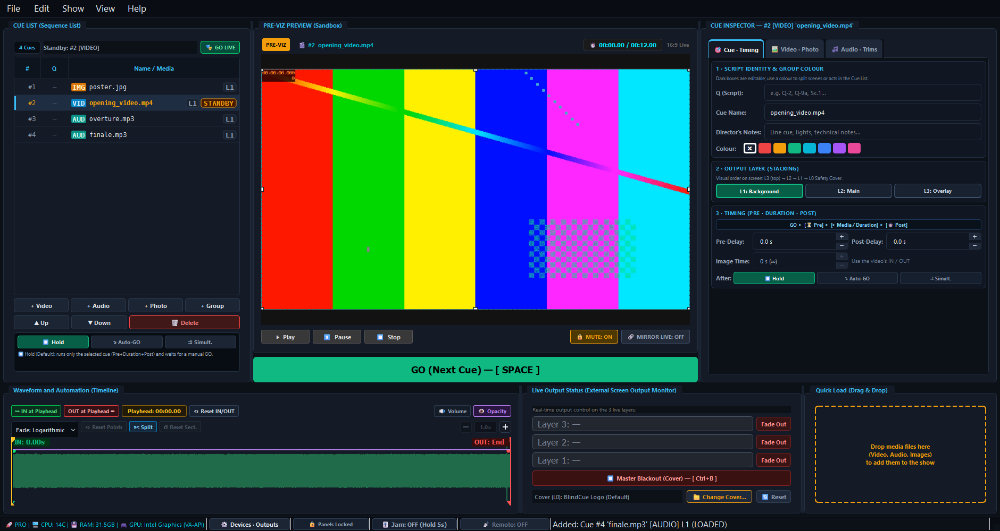
- Cue list (left column) – the running order of the show. Each row is one
cue: a video
VID, sound AUD, picture IMG or
group GRP, action ACT; captions have a 📝 icon. Under the list are the buttons
＋ Add files… / + Text / + Group / + Action,
Up / Down to move and Delete.
- Pre-Viz preview (middle) – a private preview just for you. The audience never sees it.
Play / Pause / Stop check the selected cue.
- The big green GO button – fires the next cue (same as Space).
- Cue inspector (right column) – all settings of the selected cue, on the tabs
Cue · Timing, Video · Photo, Audio · Trims.
- Waveform and Automation (bottom left) – the sound wave with IN/OUT points,
the volume curve and sections.
- Live Output Status (bottom middle) – what is playing on layers 1–3, with the
Fade Out and Master Blackout buttons.
- Quick Load (bottom right) – drag files here from your file manager.
- Status bar – hardware profile, Devices · Outputs, panel lock,
Jam mode, remote control and program messages.
💡 Change the program language in View → 🌐 Lingua / Language / Język
(applied after a restart). This manual opens in the program language.
Window layout (the Layout: … button next to the tabs
or View → Window layout) changes only the Preparation; the Rehearsal and Show screen is always the same.
Lite – a wide list, the preview, GO and the basic cue settings (name, notes, level, fade in and out, start
and end, where on the screen, then); the rest is under ▾ More settings, and when a cue has something hidden
that changes its playback, the inspector says so in the line This cue also has: …. Medium – plus
every tab and the waveform below. Full – everything, also the layers and quick add (the default).
↺ Restore layout goes back to the default widths. This computer remembers the choice, not the show file.
Fields that do nothing for a type of cue (the crop for a sound, say) are hidden, not greyed out; Enter
presses the focused button, Tab leaves the list.
2. New show and saving
- File → New Show (Ctrl+N) – an empty list.
- File → Save Show (Ctrl+S) / Save Show As…
(Ctrl+Shift+S) – saves a
.blindcue file.
- When saving, the program asks whether to copy the audio/video files into the show folder:
- Yes – you get a portable folder; the show opens on another computer
(e.g. from a USB stick). Recommended before a performance.
- No – only the paths to your files are saved (less space, but the files must
stay where they are).
Your original files are never changed.
- File → Open Recent – quick way back to earlier shows.
- A double-click on a .blindcue file in Explorer opens the show. When the program already runs, the file goes to it (with the question about unsaved changes); in the Rehearsal and the Show the program never replaces the show being run.
- The program autosaves (also at every GO). After a crash it offers to restore the session. You choose where to go on: Resume: next (the default, also Enter and Esc), Play the last one again (e.g. background music) or From the top. If the crash happened during the show, the program goes straight back into the show. Open without restoring deletes nothing – the previous session is set aside as
autosave.discarded.json.
- Edit → Undo / Redo (Ctrl+Z / Ctrl+Y) work for every change
in the list and in the inspector.
- File → 🖨 Export and print → 📄 Export the cue list (CSV)… – the list for a spreadsheet (Excel, LibreOffice). File → 🖨 Export and print → 🖨 Print the cue list for the operator… – only the cues started by GO, in big letters, with room for notes; …for the prompter… – script page, line, Q and name of every cue. The list opens in the web browser; print it with Ctrl+P. The page and the line are typed in the inspector (the Script field below the notes).
- Edit → 🔢 Renumber the Q… – new Q labels for the cues started by GO – the same as in the list for the operator: a scene counts as one GO, a step-by-step scene one per step; the cues that start by themselves (Simult., Auto-GO, Cascade) keep theirs. A label another cue already has is marked with ⚠. Prefix, first number and step – a step of 10 leaves room for cues added later (Q10, Q15, Q20). A "before → after" preview comes first; with several cues selected only they are numbered. One Ctrl+Z undoes it.
- File → 📥 Import → 📥 Import cues from another show… – pick a show file and tick the cues (a scene brings its cues); they come after the selection, with new inner numbers and their links kept (scene, relative start, action targets). The program says what does not come along (a link to a cue left in the other show, a missing file). One Ctrl+Z undoes it; the files go into the show's folder when it is saved as a portable show.
- Start page – when the program starts without a show it asks "What do you want to do?": a new show, from a folder of files, the practice show, open one or a recent one; next to it First steps (speakers, projector, files, GO) with buttons. Turn it off with "Show this page at start"; it comes back with File → 🏠 Start page.
- File → 🎓 Practice show (also in the Help menu) – a short ready-made show on built-in files: a note for you, music with a backdrop, a caption, a bell on the D key, a video with a crossfade, a step-by-step scene, a storm that crossfades the music, a fade of everything and an end caption. It is saved in Documents\BlindCue\Practice show; change it and practise in the Rehearsal without files of your own.
- Quick start – File → 📁 New show from a folder… adds the folder's videos, sounds and pictures in name order (1, 2, 10) as separate cues or as one scene (sounds only: one playlist). File → 📥 Import → 📋 Import a cue list (CSV)… turns a list written in Excel (columns as in the export: Q, Name, Type, File, Page, Line, Notes; semicolon or comma) into cues after the selection; a row without a file waits for its file (the "Before the show" page lists it as missing). In Open recent you can 📌 pin the open show – it stays on top and never drops out.
- The file in another program – right-click a cue → 🛠 The file: Show in its folder, Open with the default program or with a favourite program (e.g. a sound or photo editor; ➕ Add a program… remembers it on this computer). When you come back to the program and the file has changed, its waveform and length are read again by themselves.
- Missing files – File → 🛟 Backups and missing files → 🔎 Find missing files in a folder… (or the button on the "Before the show" page): point at a folder (a USB stick, the show's folder on another computer) and every missing file found there by its name goes back to its cue – all at once, one Ctrl+Z. Right click on a cue → 📂 Choose the file… puts another file in (or the first one, e.g. for a cue from an imported list); the cue's settings stay.
- History of changes – Edit → 🕘 History of changes… lists what Ctrl+Z can take back, in words (e.g. "Q7 'Bell': Fade In 2 → 0", "Added …"); Undo back to here takes back the chosen change and every later one (Ctrl+Y redoes them). Undo also works after a save. File → 🛟 Backups and missing files → 🕘 Restore a backup… loads the cue list of one of the copies made at every save – as one change that Ctrl+Z takes back.
- Several files at once – when you drop several files on the list and they are not only sounds (sounds get the playlist question), the program asks whether to make them one scene (one GO per item). The question never blocks the work; the answer is a step of its own for Ctrl+Z.
- File → ℹ Show info… – the title (on the printed lists instead of the file name), the author and notes, saved with the show; below them the numbers: cues of each kind, how many GOs, effects, cues switched off, missing files.
- Backups – every save keeps the previous file in the
<name>_backups folder next to the show (the newest 5, with the date and time in the name). To go back to one, copy it next to the show and open it.
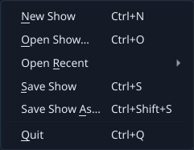
3. Adding video, audio, photos and captions
Three ways to add a file
- The button under the list ＋ Add files…: videos, sounds and pictures, several at once too (in name order). The dialog opens in the folder used last; shows are saved in Documents\BlindCue at first.
- Drag files from your file manager onto Quick Load (bottom right corner) or
straight onto the cue list: they go after the row you drop them on (below the last row: to the end),
in the same order.
- Playlist (e.g. music before the show and in the interval): drop several audio files on the list at once and answer One playlist – you get one folded row (a scene in ⤵ Sequential mode) that plays the tracks one after another after a single GO. File → 📥 Import → 🎵 Import a playlist (.m3u)… or dropping an .m3u file does the same with a list from another player (missing files and internet streams are left out, the status bar says how many). The scene can be switched to 🔁 Loop Scene or 🎲 Random.
- A new cue goes right after the selected one (nothing selected: to the end of the list).
When the selected cue is tied to the next one (Simultaneous, Auto-GO) or is a group, the
new cue goes after the end of that chain or group – the status bar says where. Move it with
Up / Down (Alt+↑ / Alt+↓).
| Video | MP4, MKV, AVI, MOV, WEBM |
| Audio | MP3, WAV, FLAC, OGG, AAC, M4A |
| Photos | PNG, JPG, BMP, GIF, WEBP |
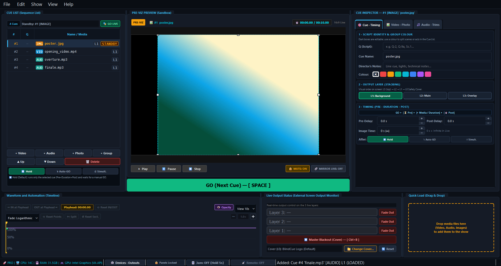
Photos
By default a photo stays on screen until something replaces it: the next cue on the
same layer, or Fade Out. Set the display time in the Inspector:
Cue · Timing → Image Time (e.g. 10 s; 0 = no limit).
For a slideshow use several photo cues in a row with Auto-GO
(chapter 4), or a group.
Captions (text on screen)
- Press + Text under the cue list.
- Type the text (Enter = new line), set the font size, colour,
position (bottom / centre / top) and whether you want a dark band behind the text
and a shadow. The bottom of the window shows a preview of what the projector will show.
- OK – a cue with a 📝 icon appears in the list. It is put on layer
L3: Overlay (the caption sits on top of video or photos) with soft fades
(Fade In / Out 0.5 s).
- To change the text: right-click the caption cue → ✏ Edit text….
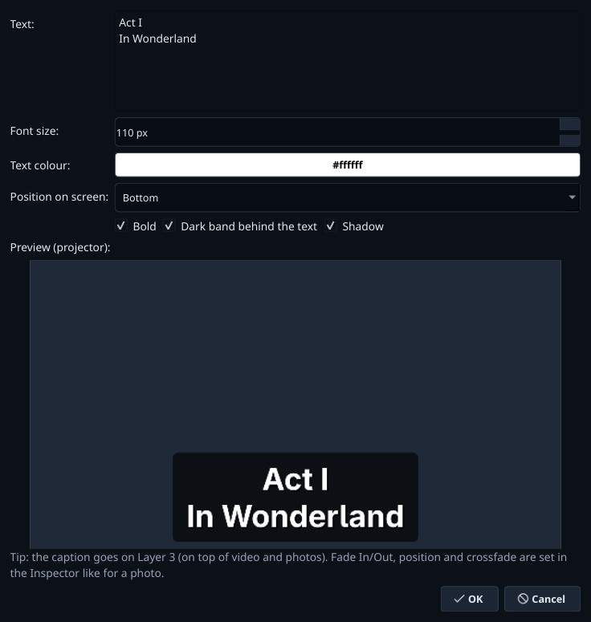
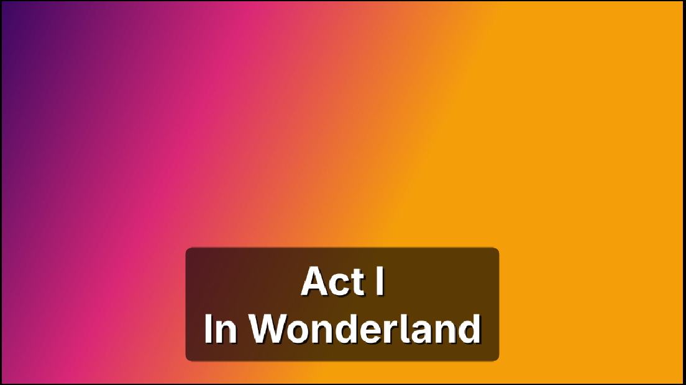
A caption behaves like a photo: in the Inspector you can change its position, scale, opacity,
display time (Image Time, 0 = until faded out), fades and crossfade.
The caption is stored in the show file and is re-created on another computer.
A caption together with music (or a video)
- In the list put the music cue first and the caption cue right below it.
- Select the music cue and in the Inspector choose After: Simult.
One Space starts the music and shows the caption at once.
- In the caption cue set Image Time, e.g. to the length of the song, and the caption
fades out by itself. Or leave 0 and fade it out with Fade Out next to layer 3.
💡 The same works with a video: video on L1, caption on L3, Simult.
on the video cue. You can also select both cues and group them (Ctrl+G) in
Simultaneous mode.
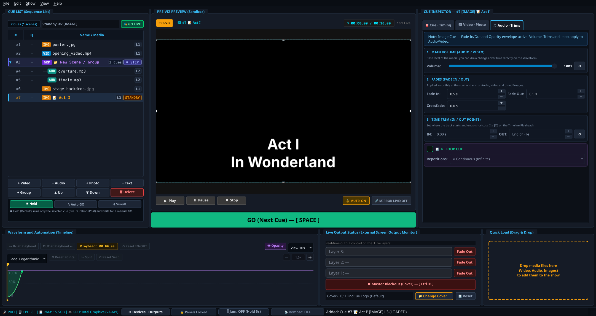
Action cues – stop, fade, level, opacity, note
An action cue has no file: it acts on other cues or shows a note for you.
Add one with the + Action button (pick the kind from its menu). In the list it has the
ACT badge, and its settings are in the Inspector, ⚡ Action tab. Like any
cue it is fired with GO; it can have a Pre-Delay and Auto-GO and belong to a group.
| 🔉 Fade out and stop | brings sound and picture down over the given time, then stops. The stopped cues do not start their Post-Delay or Auto-GO. E.g. the end of the background music as an ordinary line of the list. |
| ⏹ Stop at once | cuts at once, also cues still waiting for their Pre-Delay. |
| 🔁 Release loop | the looping cue (loop, or a section repeated forever) finishes its current pass and goes on: to the next section or to the end, with Post-Delay and Auto-GO. A Loop Scene group finishes its current round and stops (it does not start over and does not start the next scene). |
| 🎚 Level change | changes the volume of what is playing without stopping it: absolute (as if the cue Volume were the given value) or relative (e.g. −10 dB), over the given time with the chosen curve. Music under a dialogue: one action −10 dB, later another +10 dB. |
| 🌓 Layer opacity | dims the whole layer (pictures and videos), e.g. the background to 30 % during a scene. The next cue on that layer starts at full opacity. |
| 📝 Note for the operator | text in a coloured strip at the top of the program window, never on the projector. It does not block GO; it goes away at the next GO or with ✕. |
| ↪ Jump to a cue | starts the chosen cue (GO then goes on from it) or – Only as the next GO – just makes it the next one. At most N× limits the repeats: e.g. a scene played twice, then GO goes on. The count starts again when the show runs from the top. |
| 📞 Call a cue | starts the chosen cue without moving GO (like an effect). A cue with 📞 Call only ticked (3 · Timing card) is outside the GO order; the Inspector shows where it is called from. |
| ⏩ Move the playback | moves a playing sound or film: to a position in the file, by N s forward or back, or to N s before the end (e.g. skipping a verse in a rehearsal). |
| ⌛ Wait, then the next one | a wait you can see in the list: after the given seconds the next cue starts by itself (instead of a hidden Pre-Delay). Pause All holds it, PANIC cancels it. |
| ⏸ Pause / ▶ Resume | pauses the chosen sounds and films that are playing, or lets them play on from where they stopped; the others go on. Cues waiting for a mark or the end of a paused cue wait with it. With a fade (the Fade field) the music goes to sleep (fades out, then stops – e.g. for the interval) and wakes up (fades in to the level it had). |
| ⏱ Stopwatch | a stopwatch on the status bar (for example how long an act takes): Start, Stop (the next start goes on counting) or Reset. PANIC leaves it alone. |
What it acts on (Acts on field): Everything playing, One layer (L1–L3)
or Chosen cues (tick them in the list; a group = all its cues). When none of the targets
is playing, the action does nothing and says so in the status bar.
💡 “Everything playing” really means everything. If the same GO starts new music
(Simult.), put the action before it in the list or pick the exact cues as targets.
4. Setting up a cue (Inspector)
Click a cue in the list and the Inspector on the right shows its settings.
You can also select several cues of the same type (Ctrl/Shift+click)
and change them all at once.
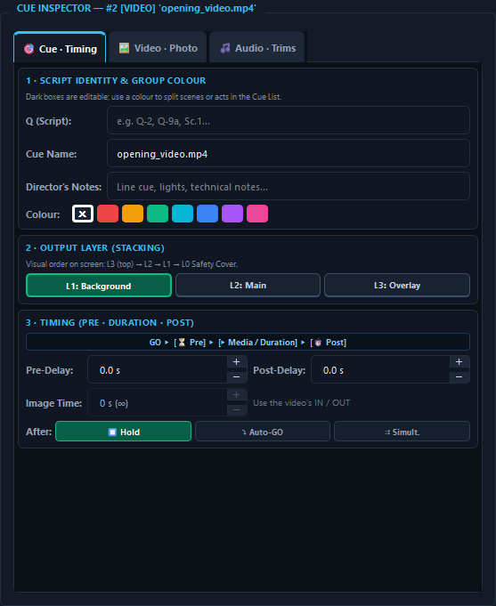
The “Edit cue” window – the simplest way, in every view layout: double-click a cue (not on the number column), Enter on the list or the ✏ Edit… button under the list. One window holds what matters for that cue:
- sound and video – the waveform with a start and an end to drag, ▶ Listen (in the headphones, if chosen), ⇤ Start here / End here ⇥ where it is playing now, ✂ cut the silence, ↺ Whole file, volume, loop;
- picture and video – size and position (⌖ Centre), for a picture its time on screen;
- caption – ✏ Change the text…;
- scene – how it plays (all at once, in sequence, step by step…);
- for all: name, Q, notes, “Then” and the transitions – fade in, fade out, crossfade.
OK saves everything as one step (Ctrl+Z undoes all of it), Cancel changes nothing. F2 still renames a cue right in the list. During the Show the window does not open – cues do not change then.
The "Cue · Timing" tab
- Q (Script) – your cue number from the script, e.g.
Q-5 or
Sc.2. It stays with the cue when you reorder the list.
- Cue Name – the description shown in the list (e.g. "Choir enters").
- Director's Notes – a hint for the operator, e.g. "after the line: and then the lights went out".
It is visible in LIVE mode.
- Colour – colour scenes/acts so the list is easy to read.
- Output layer L1 / L2 / L3 – see chapter 8.
- Pre-Delay – seconds to wait after GO before the cue starts.
- Post-Delay – seconds to wait after the cue ends (matters with Auto-GO).
- Image Time – how long a photo stays visible (0 = no limit).
- After – what happens after this cue:
- Hold (default) – waits for your next GO.
- Auto-GO – after Pre + duration + Post it fires the next cue by itself
(e.g. a song plays and a video starts right after it).
- Simult. – on GO the next cue starts at the same time
(e.g. a photo and music together).
The same three modes are under the cue list (Hold / Auto-GO / Simult.).
- ⛔ Exclusive – while this cue plays, a manual GO is refused (also from the remote), so a GO given by mistake cannot cover it; Ctrl+Space still forces the GO. Careful with images without a duration – they stay until you stop them.
- Start (3 · Timing card, outside the basic view) – with GO
(as always) or by itself, relative to another cue: after the start (e.g. a caption 2 s after the music
begins), after the end (applause 0.5 s after the song ends) or before the end (a bell 1 s before
the music ends). Such a cue is outside the order: GO skips it and it does not move the pointer; the show list
marks it ⏱ #3+2s. Pause All holds the countdown, PANIC and Fade All cancel it. "After the end"
counts when the cue ends by itself – one stopped by hand starts nothing. Undo GO does not take back cues that
started later by themselves.
- Versions of the show – right-click a cue → ⊘ Switch off / on in this version.
A cue that is off never plays: GO, chains, Auto-GO, groups, relative starts and jumps pass it by; the list marks
it ⊘. When something points at it (the Auto-GO before it, a jump, an action, a relative start), the status
line warns you. Show → 🎭 Versions of the show: Save as a new version… (e.g. "short", "second
cast") and switching between versions; Full show has every cue on. The versions are saved with the show,
and the current one is on the status bar ("Version: short · 12 cues off").
- At (3 · Timing card): the cue starts by itself at that time during the
Show (e.g. pre-show music at 5:50 pm, the bell before the end of the interval). GO skips it; more than a
minute late it is skipped (it never starts later by surprise). The status bar shows the clock and the next such
cue; Show → ⏳ Time → ⏸ Hold the time plan stops the plan and 🕐 Time plan in the rehearsal too runs it in
rehearsals. The show list marks it 🕐 17:50.
- Marks: ◆ Mark above the waveform puts a mark at the playhead, and
Ctrl+K where the selected cue is playing right now (e.g. tapping the chorus in a rehearsal). The marks
are listed in the 3 · Timing card. Another cue can start on the mark (Start → on the mark of, e.g. a
caption exactly on a word of a song), also after a seek. A mark that something starts from cannot be
deleted.
- Typing a time: every field in seconds (IN/OUT, fade in, fade out, crossfade, delays, relative start) takes 83.5, 83,5, 1:23.5, 1:02:03, 2.1.7 (dots for colons – handy on the numeric keypad), 1m23s, 2m or 45s – after Enter the field shows seconds.
5. Fades, crossfade, effects and picture
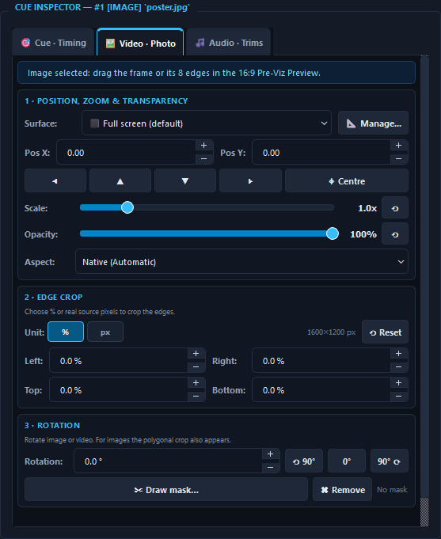
Fades (in and out)
- Tab Audio · Trims → 2 · Fades: Fade In (from black / silence)
and Fade Out (to black / silence) in seconds. Works for video, audio
and photos.
- Choose the curve under the waveform: Fade: Logarithmic
(the most natural for sound), Soft S-Curve or Linear.
Crossfade between cues
With Crossfade the previous picture dissolves smoothly into the next one,
without a black gap – photo into photo, photo into video, video into video.
- Select the cue that should come in (e.g. the second photo).
- Tab Audio · Trims → 2 · Fades → field Crossfade:
type a time, e.g. 2 s.
- Set Fade In = 0 on that cue (the crossfade replaces fading in from black).
- Both cues must be on the same layer (usually L1). On GO, the picture that was
on that layer dissolves into the new one.
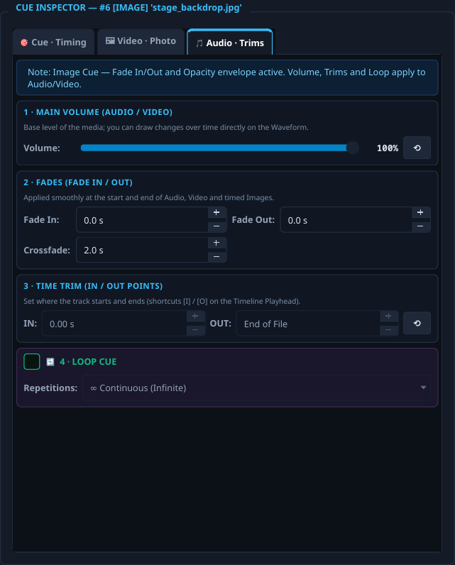

💡 A slideshow with crossfades: several photos in a row on L1, each with
Crossfade 1–2 s, Image Time e.g. 5 s and After: Auto-GO – the photos
change smoothly by themselves.
🔀 A picture that moves on to the next one by itself (Then: Auto-GO or a scene "one after another") hands over its layer the crossfade time early: the next picture comes in over the one still shown, with no black gap. One time for several pictures at once: select them, right-click → 🔀 Crossfade for the selected… (it also sets Fade In = 0).
🎵 Sound crossfade: the same field works for music. When a new song (or video) comes onto a layer where something plays and has a Crossfade of e.g. 3 s, the previous song is not cut: it fades over 3 s while the new one rises. Pause all, Fade all and PANIC also reach a song that is still fading.
Picture (the "Video · Photo" tab)
- Pos X / Y and the arrows – move the picture; Centre puts it back in the middle.
- Scale – zoom in / out (e.g. a small window in a corner).
- Opacity – transparency (e.g. 50% = half-transparent picture over the background).
- Aspect – force 16:9, 4:3, 21:9 or 1:1.
- Edge crop – cut off black bars or part of the frame, in % or pixels.
- Rotation – any angle or 90° steps.
- Draw mask… (photos only) – cut out any shape by clicking points;
Feathered edge softens the border.
- You can also drag the picture frame with the mouse in the Pre-Viz preview.
- MIRROR LIVE (under the preview) – when on, position and crop changes show
on the projector right away. Use it to line up the picture in rehearsal;
turn it off for the show.
Curves over time (automation)
In the Waveform panel choose Volume or Opacity and click on the line
to add points – e.g. bring the music down during dialogue and up again later.
Reset Points removes the curve.
6. Sound: volume, trimming, loops, levelling
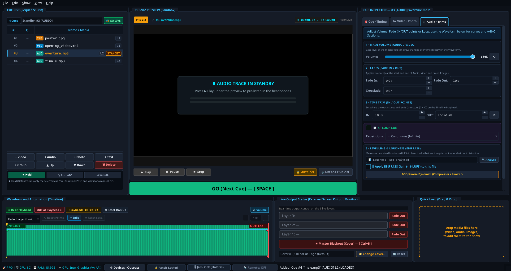
- Volume – slider 0–100% (tab Audio · Trims).
- IN / OUT trim – where the track starts and ends.
Easiest: click on the wave in the Waveform panel, then
IN at Playhead (I) or OUT at Playhead (O).
Reset IN/OUT brings back the whole file. Videos are trimmed the same way. The ✂ button next to IN/OUT puts them where the sound really starts and ends (it cuts the silence at the start and the end, e.g. of files from the internet; Ctrl+Z undoes it).
- Copy / paste the picture layout (right-click a picture or a film): 📋 Copy the picture layout keeps the position, size, crop, rotation, aspect ratio, mask and surface; 📌 Paste the layout onto the selected gives it to every selected picture and film (one Ctrl+Z).
- 🎞 Photos to this music (a photo show): select several pictures and one sound, right-click → 🎞 Photos to this music. The music starts together with a folded scene of the pictures; each picture is shown for the length of the music divided by their number and the pictures crossfade into each other (1 s; the first fades in and the last fades out in 0.5 s); the length takes the music's IN/OUT and tempo into account, all pictures go to one layer and the music to another. After the last picture the scene stops and GO waits for the cue after it. One Ctrl+Z undoes it.
- Loop cue – tick it and choose the number of repeats or "forever"
(e.g. background music during the interval).
- On start, fade the others (3 · Timing card, outside the basic view) – when this cue starts, the other sounds and videos on air fade out over the given seconds. A change of music with one cue: the old music on the same layer fades out instead of being cut (meanwhile the new one plays on a free player). 0 = no.
- Split – divides the file into sections A, B, C… (e.g. verse / chorus). Each section
can repeat; Exit Loop moves on to the next one.
- Loudness levelling (EBU R128): Analyse measures how loud the track is and
Apply EBU R128 Gain brings it in line with the others (so one track isn't much
louder). Optimise Dynamics helps with badly recorded files.
- Jam / Contest mode (status bar, hold 5 s) – levels all files at once.
- Headphone pre-listen: in Devices · Outputs choose a separate output
for headphones; then Play in the preview plays only in the headphones.
7. Groups and scenes
A group puts several cues into one collapsible row – e.g. "Act 1" or "Slideshow".
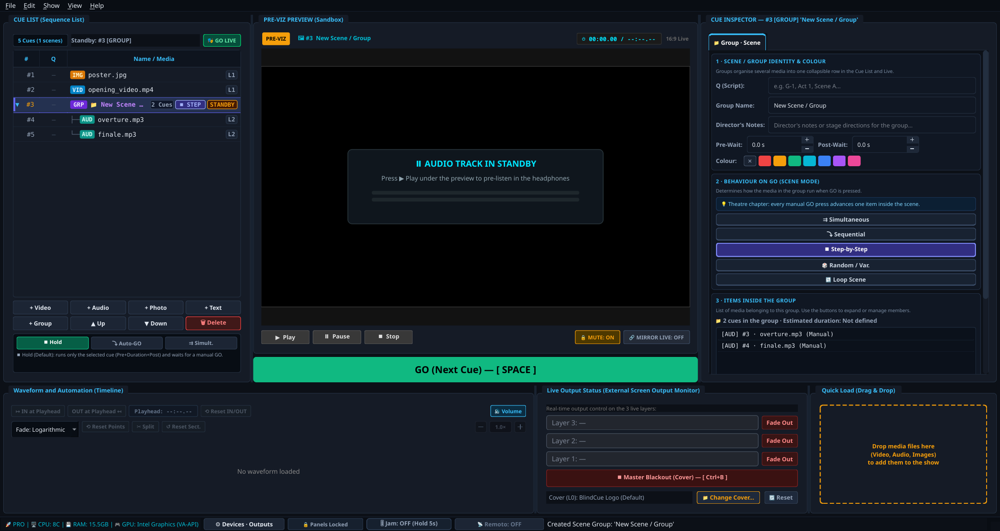
- Select some cues and press + Group (Ctrl+G).
Ungroup: Ctrl+Shift+G.
- Select the group – in the Inspector choose what GO does:
- Simultaneous – all items start at the same time.
- Sequential – one GO plays the whole sequence, one item after another.
- Step-by-Step – each GO moves one item further in the group.
- Random / Var. – a random item (never the same twice in a row).
- Loop Scene – the items play round and round until stopped.
- Open Group Timeline Studio – shows the items on 3 tracks with a ruler;
drag the blocks to set when each one comes in (e.g. music, video after 3 s, photo after 10 s).
8. Layers L1–L3 and the Layer 0 cover
The picture is made of layers stacked on top of each other:
| L3 – Overlay | on top: captions, logos, small windows |
| L2 – Main | middle |
| L1 – Background | bottom: background video or photo (default) |
| L0 – Cover | always underneath; visible when nothing plays |
- A new cue on the same layer replaces the previous one. A cue on another layer
goes on top of it.
- This applies to sound too: music and a photo on the same layer switch each other off.
That is why new audio cues go to L2 by default, photos and videos to L1.
- Choose the cover in Show → Cover (when nothing plays) or with the
Change Cover… button: ⬛ Black (the default), 🖼 Picture or logo… (e.g. the show poster), 🎞 Looping video (no sound)… (e.g. a curtain) or ▦ Test pattern for lining up the projector – it shows only in Preparation; in the Rehearsal and the Show the cover is black then. The choice is saved with the show (the video and the picture travel in a portable bundle too). The cover video stops while something covers it and goes on when it can be seen again.
9. Projector and output window
- Connect the projector (HDMI) and set an extended desktop in the system
(Windows: Win+P → Extend).
- The program detects the second screen and shows the picture there
full screen, without borders or cursor. Your monitor stays for you.
- With only one monitor, the picture is shown in a small window
"Live Output [Simulated Monitor]". Click it and press F11
to see it full screen; F11 again goes back to the window.
- Choose the screen and mode in Show → 🔌 Devices → Devices & Hardware
(or Devices · Outputs in the status bar) → Live Output Screen.
With two projectors you can stretch one picture over both or run two
independent outputs A and B.
- 🔢 Identify next to the list of screens shows a big number on every screen for 4 seconds – the same as in the list – so in a new room you see at once which screen is the projector. A click closes a number early. While something is on air the numbers are not shown (the audience would see them).
- There you also choose the audio output (house speakers) and headphones.
- The program remembers the chosen speakers on this computer (not in the show file).
If they are missing – for example a projector with speakers is unplugged – the system default output
plays and the status bar says so; when they are connected again the program goes back to them by itself.
"System default output" means: remember nothing, play where the system points.
- Audio outputs (Show → 🔌 Devices → 🔊 Audio outputs): every sound and film plays on the Stage, the Hall or the Foldback (for the performers) – chosen in the inspector, card 1, Output; Mute is a film without its sound. In the outputs window you choose which speakers each output is on this computer, what plays if they are missing (Stage → default output, Hall → like the Stage, Foldback → silence: a private track never reaches the audience), a trim in dB, ▶ Test for each output and Test them all in turn. The map can be exported and imported on another computer. During the show the window only shows the map. When a cue plays on a fallback, the status bar says so.
- Tempo (inspector, card 1): the playback speed of a sound or film, 50 to 200 % – e.g. music fitted to a choreography. Keep the pitch (on by default): faster or slower without changing the pitch of the notes. Starts "at a mark" and "before the end" count in real time, with the tempo.
- When only the projector is left (Win+P → Second screen only, or the laptop
lid closed), the program shows the director window and the output preview window on it.
- View → Show Guides on the Live Projector (Shift+F7) –
a grid for focusing and lining up the projector.
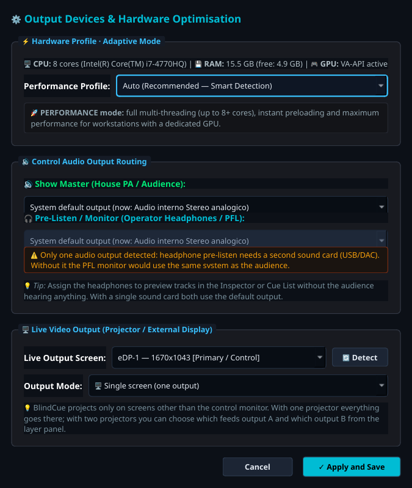
10. Running the show (LIVE mode)
When the list is ready, switch to LIVE mode: the ● Show tab at the top of the window, F5
or Ctrl+L. The screen becomes simple and large – only what you need during the show.
On the first entry (and after the screens, the speakers or the show changed) the page
Before the show comes first – in place of the list, not as a window, so PANIC and FADE ALL work. Each row says
✓ YES, ✗ NO or – NOT CHECKED and has a fix button: the picture on the projector
(Show screen numbers, Choose the screen…), the master volume (Back to 100 %), the speakers
(▶ Test tone – a one-second sound through the show's speakers, then answer Yes, heard / Not heard),
missing files (Show in the list) and the laptop charger (checked by itself every 2 s). The page ends with the start buttons (▶ Start or
From the top / From the selected cue / Resume) and Stay in Preparation. When everything is YES,
Enter and Space start; when something is wrong they check again – to start anyway, Tab
to a start button or use the mouse. Later entries show only what is wrong (or nothing). If you entered with
problems, ⚠ 2 stays at the top of the show screen – a click shows the page again.
When needed the page also shows: To fix in the list (a cue starting after a cue that is gone; an action whose targets are gone; a jump to nothing; an empty scene; a call-only cue that nothing calls – Show in the list), the computer clock when the show has cues at a time of day, little disk space (under 500 MB) and the version of the show with the number of cues switched off.
The Rehearsal (the ◐ Rehearsal tab or Shift+F5) is the show's
screen with small fixes: the list, GO and the Now playing cards work as in the show, and a named cue has a
✎ – on the ✓ LAST strip, on the ▶ NEXT bar and on the cards. ✎ opens a drawer in the right
column: name, notes, level, fade in / fade out, from / to and Then (the last one only while the cue does not
play). A change is saved at once (Ctrl+Z undoes it); Rehearsal changes: N → Review lists what was
and what is, with Undo for each – the same list is on the "Before the show" page. ✕ closes the drawer
(never Esc, which stays PANIC). In the rehearsal a card also has ⏹ (stop at once), ⇥ −5 s (jump to
the end to rehearse it) and Save level (when the card's slider is not at 100 %: the corrected level becomes the
cue's own and it sounds the same); −10 s / +10 s act at once, in the show after a 1.5 s hold. Adding, deleting
and moving cues happens in Preparation only. Rehearsal → Preparation is one click; → Show is F5 or the tab
(through the "Before the show" page); Show → Rehearsal is a 1.5 s hold on the ◐ Rehearsal tab.
⏯ Rehearse from here (right-click a cue – in Preparation and in the Rehearsal):
the program shows what should stay on stage before that cue (a picture without a hold time, music that loops,
with the level and opacity set on the way); after you confirm, it stops what plays, brings that scene back and
puts GO on the chosen cue. Music that simply plays to its end does not come back – its moment depends on the
operator. Not in the Show.
Exit PIN (optional, Show → ⚙ Running settings → Exit PIN of the show…, in Preparation only):
4 digits kept on this computer, never in the show file. With a PIN, every way out of the show (holding a tab,
End the show…) first asks for it in a field under the top bar – not in a window; the field goes away by itself
after 10 s without typing. A wrong PIN only says so, with no lock-out; after the second one the program names the way
out (closing the program – the show opens in Preparation). The PIN never blocks GO, PANIC, FADE ALL, Pause, the volume
or Undo GO. It protects against an accident and a curious pupil, not against someone determined.
The list during the show. Cues that start by themselves with the one before
(Auto-GO, "together") fold under it – its name shows ⤵+2; a click on its number opens and folds them. The next
cue always scrolls to the middle of the list. Ctrl+→ / Ctrl+← on the list are the next /
previous picture (like slides) – an ordinary GO, so Undo GO works too. A cue marked ✋ Waits for an OK in the
inspector only gets ready on GO: the NEXT bar shows ✋ OK, and it starts on the OK – Enter on the
list, the ✋ OK button or GO on the phone remote (in the director's hand, say). GO alone does not start it; the
wait lapses when another cue starts. Under the master volume slider a thin bar shows how loud the show plays now
(amber just before clipping).
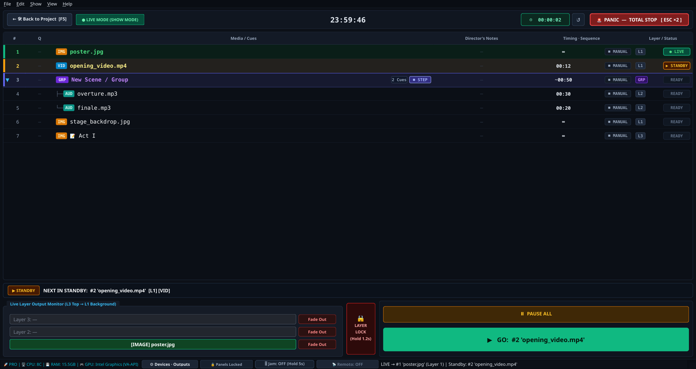
- Select the first cue – it gets the ▶ NEXT badge (ready to fire).
At the bottom there are two strips. ✓ LAST – what the last GO started (with “+ 2 together” when several started at once), how long ago, and its note; for 15 s after a GO the strip is lit green. ▶ NEXT – what the next GO will do and how it starts: by hand (GO) or starts by itself in 0:03 (Auto-GO of the cue before), and on a second line its note – in red when it holds words like WARNING, WAIT, STOP. If a cue
from the middle of the list is selected when you enter LIVE (say, the one you just fixed), the program
asks where to start: From the top, From the selected cue, and after a trip to the
editor also Resume from – where LIVE was left. Coming back without changes, it does not ask.
- Press Space (or the big GO button) – the cue plays, gets the
● ON AIR badge, and NEXT jumps to the next one.
- Each further Space = the next point of the show. A second press within 0.4 s is ignored – protection against a double GO.
- GO too early or on the wrong cue? For 15 s after a GO the right end of the
✓ LAST strip holds ↶ Undo GO #5 · 12 (the number = seconds left; Pause All stops the count).
One click, no question: it fades out only what that GO started (sound and video in 1 s, a picture in 0.5 s),
brings back a picture that GO replaced, resumes a sound or video it cut off from where it stopped
(fading in over 1 s), cancels a start still waiting in its delay and points the GO back at
that cue – just give the GO again at the right moment. Action cues stay as they were. Hover over the button to
see exactly what it will do. From the keyboard: Show → Undo last GO (on purpose without a shortcut).
The next GO, PANIC, FADE ALL and a change of mode end the offer.
- Presenter remote and extra keys – Show → ⚙ Running settings → ⌨ Keys and presenter remote…: GO, previous / next cue (selection only), Pause all, Fade all and Undo GO can get keys of this computer. 🎯 Remote wizard… asks for the remote's buttons one by one (GO, previous, pause); Presenter remote fills the usual keys (PgDown = GO, PgUp = previous, B or full stop = pause). They work in the rehearsal and the show only, never while typing; a key of an effect of the show wins, and the program's keys stay (Space = GO, Esc twice = PANIC). PANIC is not offered on purpose. Do not use the remote's "slide show" button: it sends F5 or Esc.
- The GO button says what it will do: ▶ GO: #3 'name' – all set. It turns
amber (never red) when something is different: ⌨ the keyboard is in another window (click GO),
⚠ the file is missing, ⏳ GO waits for an exclusive cue (Ctrl+Space forces it),
↻ this cue already plays and restarts.
- In the Times column a playing cue shows what is left (e.g. -00:45) with a
progress bar; during a Pre-/Post-Delay, a ⏳ / ⏱ countdown. In the last 5 s it turns amber when the
next GO is yours (the cue has no Auto-GO). Cues already played get a ✓ and a dimmer name;
the ticks go when you start from the top.
- Notes with words like WARNING, WAIT, STOP, BLACKOUT,
DANGER (also in Italian and Polish: ATTENZIONE, UWAGA, CZEKAJ…) are highlighted in the list.
- ↑ / ↓ change which cue is next (e.g. to skip something).
Double-clicking a row only makes it the next cue (start it with Space); to start it at once, right-click → Start this Cue now.
- On the right, the Now playing column: a card for every cue on air – name, layer,
a state only when it is an exception (PAUSED, LOOP ∞, starts in 0:03), the time played and a big
time left (with ⚠ 5 s before the end when the next GO waits for you), and buttons for that cue only:
❚❚ pause, Fade out, Release loop. Pictures and captions take one line with Fade out.
A new cue takes the first free place, so the cards never jump. With three or more sounds and videos on air the later cards are lower: only the name with Fade out and the time bar – everything fits without scrolling. The layer panel and its padlock stay in
Preparation; Pause All sits next to GO.
- A sound or video card also has −10 s / +10 s (in the show hold for 1.5 s, in the rehearsal a moment is enough, so a
stray click never moves the music) and a level of this cue slider – your correction for now only (the mouse
wheel works only after a click on the slider, Ctrl+click goes back to the cue's level). When an action
cue changes a level, the target's card shows it as it happens, e.g. ↘ to 20 % (2.0 s) by #7. When the next
cue will start by itself (Auto-GO of the one before), the ▶ NEXT bar has a Hold button: this time
the next cue waits for your GO (an actor is late, say) – Pause All would stop the music as well. At the
top of the column, Output preview shows what the audience sees, small (up to 5 frames a second); ▾
folds it, and this computer remembers that.
- Notes of action cues appear in a coloured strip at the top of the window; only you see them. During the show a plain note is a card in Now playing (with OK), so it takes no row of the list.
- Fade on a card brings the cue down gently: over its own Fade out, or 3 s when it has none (change it in Show → ⚙ Running settings → ⏬ Fade button time…). While a scene plays, a 🎬 scene card above its cues has Fade the scene (also a right click on the scene in the list): everything the scene plays or shows fades, and GO moves to the cue after the scene.
- Effects on demand (a bell, thunder, applause): in the Inspector tick 🎵 Effect on demand and type a key – a letter or a digit. Such a cue is outside the order: GO skips it, and the list shows a purple mark with its key (e.g. ⌨ B). In the rehearsal and the show press the key or click the effect's tile at the top of the Now playing column: the effect plays on a free player, does not move GO and stops nothing. What the key does: Start (again = from the top), Start / stop or Plays while the key is held. Several cues on the same key start one after the other (steps). ↻ Repeat the last effect (Ctrl+R) plays the last effect once more. The keys do nothing while you type in a text field. Effects have three free players (while output B is off); a fourth effect takes the place of the oldest.
- The Show Stopwatch (top) starts by itself on the first GO.
- Countdown (e.g. the interval): Show → ⏳ Time → ⏳ Countdown (interval)… or the
⏳ Countdown action cue (title and minutes; 0 minutes stops it). It shows on the status bar, and
🖥 Big countdown (backstage) opens a big window you can move to a second screen. The last minute is amber
and blinks.
- Run log: the time of every GO since the first GO is saved when you leave the show, in
Documents\BlindCue\przebiegi\<show name> (a CSV file for a spreadsheet). In the next show the
NEXT bar says when that cue came last time ("last time at 12:34").
- Back to preparation: hold the ○ Preparation tab for 1.5 s or use Show → End the show… (Ctrl+Shift+F5); whatever plays keeps playing. F5 and Ctrl+L only enter – a stray key press never takes you out of the show. Alt+F4 during a show asks first.
💡 During the show keep the program window active (click it) so that
Space goes to the program. Close other programs. When the keyboard goes elsewhere (e.g. someone clicked the picture on the projector), a red bar appears in LIVE mode – click the program window.
💡 A phone can be the remote too – see chapter 12.
11. Emergencies
| PAUSE ALL | freezes everything (sound, video, timers); a second
click resumes from the same point – e.g. while an actor waits for applause. A GO
during the pause starts just the new cue (e.g. an announcement); what is paused waits for
RESUME ALL. |
| Master volume and Mute Ctrl+↑ Ctrl+↓ Ctrl+M | at the top of the window in every mode: lowers or raises everything that plays and will play (the headphone preview stays as it is). It goes back to 100 % every time the program starts, so yesterday's low level never surprises you today. Useful when pinned speakers ignore the laptop's volume keys. |
| Fade Out (next to a layer) | softly ends just that layer. |
| Master Blackout Ctrl+B | fades everything out and shows the cover. |
| FADE ALL Shift+Esc | sound and picture on every layer fade out together (1 s) and stop – a calmer PANIC. After FADE ALL and after PANIC the next GO returns to the hand-started cue that was stopped – a GO given too early can simply be repeated (background music running since the start of the act does not take the GO). |
| PANIC Esc twice within 0.6 s (in the editor too while something plays; Esc in a text field only leaves the field) | cuts everything instantly (0 ms) – last resort. |
12. Extras: phone remote, mapping, settings
Phone remote (Wi-Fi)
Show → 🔌 Devices → LAN Remote Control (Web & OSC) (F8) → start the services
and scan the QR code with your phone (phone and computer on the same Wi-Fi).
The phone shows a big GO button, pause, blackout and PANIC.
The second code (Director Monitor) gives a read-only view – e.g. for the director
in the audience. Access is protected by a 6-digit PIN.
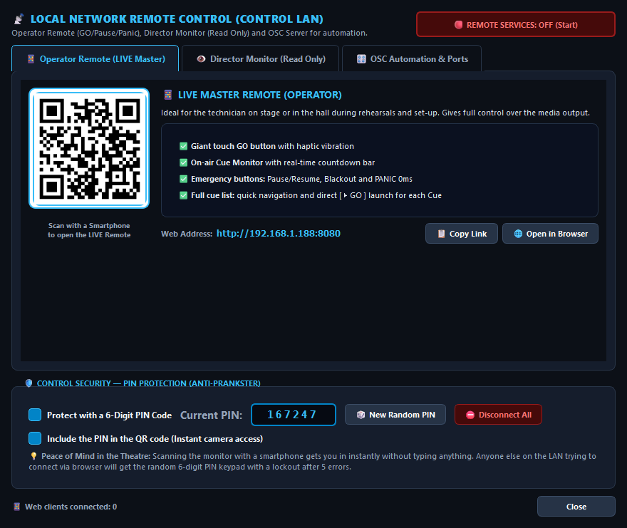
Projection Surfaces & Mapping Studio – F7
When the projector is not straight or you project on an unusual screen: keystone correction
(4 corners), extra virtual screens (e.g. a picture only on a column of the set),
round masks and cut-outs. Assign a cue to a surface in the Inspector
(Video · Photo → Surface).
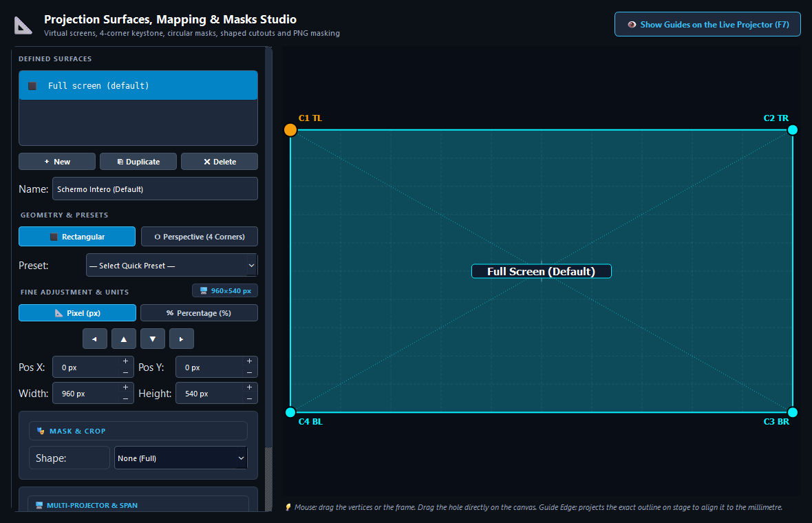
AI assistant (Claude Desktop and other MCP programs)
An AI assistant can prepare the show for you: build the cue list from a folder of files
following the script, add captions, scenes, notes for the operator, and check the
whole show. You only check the result in the Rehearsal and run the show.
- Show → 🤖 AI assistant → 🤖 AI assistant… → Add to Claude Desktop…. The program makes the extension
file (in Documents\BlindCue) and opens it – confirm the installation in Claude Desktop and
choose the folders the assistant may use (the shows folder and the media folder). For other MCP
programs (Claude Code, Cursor…) use Copy the settings for other programs.
- Write to the assistant, e.g.: "Prepare the show Alice.blindcue from the files in
Media\Alice: first the poster and the overture together, then the caption 'Act I', in scene 1 the
film and the music lowered under the dialogue." The assistant works on the show file; before
overwriting it, it keeps a .bak copy.
- If you want the assistant to change the show open in the program (you see it at once,
Ctrl+Z undoes every change), tick The AI assistant may change the show. It changes
the show only in Preparation – in the Rehearsal and the Show it can only read. Changes
from the assistant… lists what it did.
💡 The assistant plays nothing, never deletes media files and works only in the
folders you choose. The AI provider receives cue names, notes and file names – not the content of
the files.
Other
- Help → 🖨 Cheat sheet to print – one A4 page to keep next to the laptop: the keys of the show, this show's effects with their keys, the extra keys of this computer (remote) and what to do when something does not work. It opens in the browser; print with Ctrl+P.
- File → 💻 Settings of this computer – Save to a file… takes the speakers and outputs, screens, extra keys, look and running options along; on another laptop Load from a file… (in Preparation) shows what will change. The exit PIN stays on its computer. Some settings take effect after a restart.
- View → Interface Theme – program colours (including a black-and-white one).
- View → Operator Audio Cues – a quiet "beep" on GO/STOP/PAUSE.
- View → Lock Panel Widths – protects the layout from accidental changes.
- Status bar, ECO / STD / PRO – performance profile (ECO on a slower computer).
13. Keyboard shortcuts
| Space | GO – next cue |
| ↑ ↓ | select cue / change the next cue in LIVE |
| F5 / Ctrl+L | enter the show (enter only) |
| Ctrl+Shift+F5 | end the show (asks) |
| Ctrl+P | pause / resume all |
| Esc ×2 | PANIC: twice within 0.6 s |
| Shift+Esc | fade all (1 s) |
| Ctrl+F | find a cue: in Preparation it filters the list (name, Q, notes, file; Enter – first match, Esc – close), in the Rehearsal and the Show it only sets the next GO |
| Ctrl+K | a mark where the selected cue is playing (Rehearsal) or at the playhead |
| Ctrl+Space | forced GO – also while an exclusive cue plays |
| A–Z, 0–9 | effects on demand (in the rehearsal and the show, the key set in the cue) |
| Ctrl+R | repeat the last effect |
| Ctrl+B | master blackout (cover) |
| Ctrl+G / Ctrl+Shift+G | group / ungroup |
| Alt+↑ Alt+↓ | move cue |
| Del | delete cue |
| Enter / double-click | the “Edit cue” window (list in Preparation) |
| I / O | IN / OUT point at the playhead |
| Ctrl+Z / Ctrl+Y | undo / redo |
| Ctrl+S | save |
| F7 / Shift+F7 | surface studio / alignment guides |
| F8 | remote control |
| F11 (in the output window) | full-screen output window with a single monitor |
| F1 | this manual |
14. Good practice before a show
- Do a dress rehearsal on the same computer and projector, from the first to
the last cue.
- Convert heavy videos. On a slower computer a video straight from a camera or phone
(very high bitrate) can stutter. A Full HD version at about 8–10 Mb/s looks the same
on the projector and plays smoothly.
- Save the show with the files copied and keep a copy on a USB stick.
- Write in Director's Notes after which line each cue goes.
- Turn off MIRROR LIVE, close other programs, turn off notifications and screen
sleep in the system.
- Set a cover (poster or black) so the audience never sees the desktop before the start.
Manual for BlindCue 0.1.